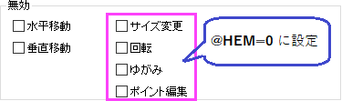

(オブジェクトプロパティ)サイズタブ
Ob-Prop-Dimentions-tab
単位
オブジェクト位置とサイズの単位を、単位ドロップダウンリストから指定します。
Note:レイアウトウィンドウでは、ページサイズがレイヤサイズと同じに設定されているため、このドロップダウンリストの下にレイヤの%オプションはありません。
開始/終了
指定した単位を使って、矢印オブジェクトの 開始点 と 終了点 の X座標/Y座標を設定します。
手法
角度オブジェクトの場合、位置と角度サイズを指定する方法が2種類あります。
- 3点：開始点、中間点、終了点の3点を指定して、角の頂点と辺を決定します。
- 角度と大きさ：開始と角度で開始角度と角度サイズを指定します。頂点の位置をXとY値で指定します。辺の長さを 開始と終了で指定します。デフォルトでこの手法が選択されています。
縦横比を保持
このチェックボックスにチェックを付けると縦横比を維持してサイズ変更できます。
元のアスペクト比に戻す
元のアスペクト比に戻す ボタンをクリックして、表のサイズを元のアスペクト比に修正します。
左/右/上/下（余白）
4 辺のマージンや位置を使って、矩形（四角形）のサイズを指定します。
無効
この 無効 オプションではオブジェクトの形状や位置など変更不可にできます。カテゴリー:図形オブジェクトを作成するを参照ください。
| 水平移動
|
チェックを付けると水平方向の移動を無効にします。
|
| 垂直移動
|
チェックを付けると垂直方向の移動を無効にします。
|
_Dimentions_tab/Tip_icon.png) | オブジェクトのサイズ変更、回転、ゆがみを無効にしたり、オブジェクトのポイント編集を無効にしたい場合は、システム変数@HEMを使用して以下のオプションを表示し、これらの動作を制御します。

- サイズ変更：チェックを付けるとサイズ変更を無効にします。
- 回転：チェックを付けると回転操作を無効にします。
- ゆがみ：チェックを付けると傾斜をつける操作を無効にします。
- ポイント編集：個々のオブジェクトポイントの位置が編集されないようにするには、このチェックを付けます。
Note: Origin 2025b以前のバージョンでは、これらのコントロールはデフォルトで表示されます。
|